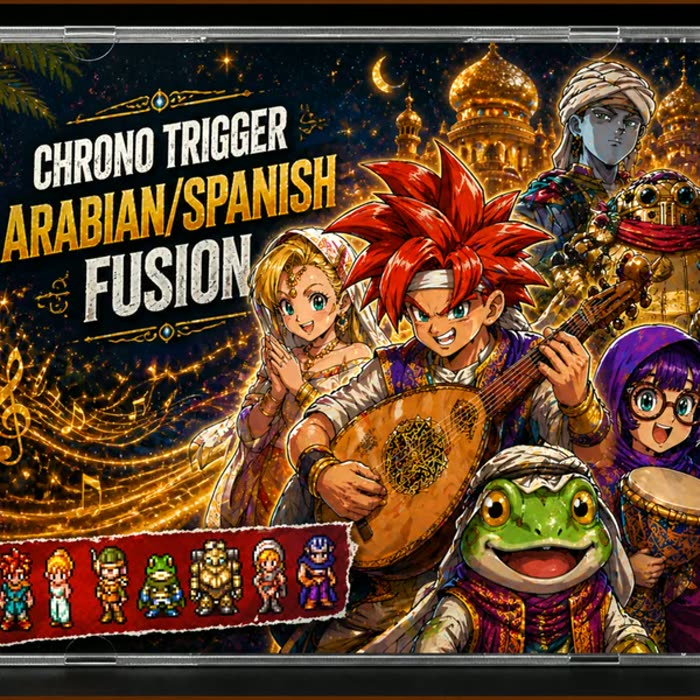

Chrono Trigger OST - Arabian/Spanish Fusion
Arabian and Spanish fusion reimagining the music of Chrono Trigger, the 1995 Super Nintendo RPG. 43 tracks with 20-second previews.
Get this album- 1Main Theme
- 2Morning Sunlight
- 3Peaceful Days
- 4Memories of Green
- 5Guardia Millennial Fair
- 6Gato's Song
- 7A Strange Happening
- 8Wind Scene
- 9Secret Of The Forest
- 10Battle theme
- 11Courage and Pride
- 12Manoria Cathedral
- 13Silent Light
- 14Boss Battle 1
- 15Frog's Theme
- 16Fanfare 1
- 17Kingdom Trial
- 18A shot of Crisis
- 19People Without Hope
- 20Lavos Theme
- 21The Day the World Revived v2
- 22The Day the World Revived
- 23Bike Chase
- 24Robo Gang Johny
- 25Robo's Theme
- 26Brink Of Time
- 27Delightful Spekkio
- 28Underground Sewer
- 29Boss Battle II
- 30Primitive Mountain
- 31Ayla's Theme
- 32Burn Bobonga
- 33Magnus Battle Theme
- 34Singing Mountain
- 35Tyran Castle
- 36Lab 16s Ruins
- 37At The Bottom of Night v2
- 38At the Bottom of the Night v1
- 39Corridors of Time
- 40Schalas Theme
- 41Sealed Door
- 42To Good Friends
- 43World Revolution